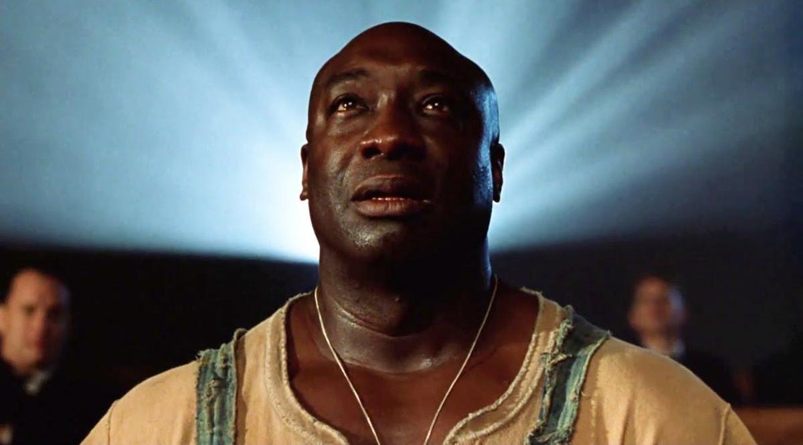

"GOOD FILMS MAKE LIFE BETTER"
we are OCD (Obsessive Cinema Disorder) we are movie reviewers
We will soon be offering an enhanced version of the OCD fan club now dubbed OCD-CINEMA Prime, a subscription service providing an ad free experience, easier access to the site's content, as well as exclusive rare footage fit for cinephiles. And we are bringing back, by popular demand, our “Letters to the Editors” to make sure we continue to provide two-way communication between us. It was a highlight of OCD's experience with the site and we are eager to embrace it.
OCD was an innovator in so many ways. From democratizing movie criticism and bringing it to a more mainstream audience, to publishing his reviews on CompuServe at the dawn of the Internet, we always pushing the envelope. It was a great challenge to develop a product that would meet his exacting standards, but he loved the site when he last saw it, and it is our goal to continue developing a platform that would merit his upturned thumb.
So sit back, grab your popcorn and join in the conversation!